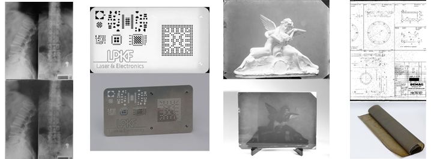

WideTEK® 25-600 Wide Format Flatbed for All Markets
Large format color flatbed scanner for documents up to 18.5 x 25"
Enhanced with backlight for transparent source material, like X-rays
WideTEK® 25-600, the world´s fastest large format color flatbed, covers applications in every market, whether it is in the medical, government, industrial or graphics arts sector. It scans the full bed (DINA2+, 18.5x25".) at 300dpi color in less than three seconds, which is two times faster than the closest competition.
Backlight Unit for X-rays, film, negatives and more
New! The WideTEK® 25-600 brings you an even higher return on investment with the addition of the new WT25-BACKLIGHT option for scanning transparent material of all kinds, like X-rays, glass negatives, 35mm microfilm aperture cards, cutout stencils, sepias and film.
Above is an example of the various media scanned with the backlight unit. The scans are at the top and the source material below.
The optional backlight unit replaces the standard scanner lid. It is easily assembled and users can scan with or without the backlight, depending on the source material requirements, by simply switching the light on or off. The unit can be purchased separately for customers who already own a WideTEK 25-600. If you are a service provider, this gives you even more ways to generate revenues with your WideTEK 25.
In the medical sector, operators can scan negatives, radiography, cardio plaques and larger paper documents in black and white, color or grayscale as required. The WideTEK 25 is compact, only (76cm, 30") wide, so it will fit in any doctor´s office or hospital floor.
There are many film scanners available on the market for small image formats and even medium sized images, but in the large format range, film scanners are very rare and/or prohibitively expensive. WideTEK 25-600 goes far beyond just film scanning and does it an a surprisingly affordable price.
Municipalities, cadastral offices, oil companies, GIS services and other government agencies use the WideTEK 25-600 to digitize and archive a number of different types of documents. But the WideTEK 25 is also ideal for photographers, galleries, advertising agencies and graphic artists to present and preserve their work in a digital format.
2D and 3 D scanning

The revolutionary 3D scanning mode opens many new opportunities in the printing and industrial inspection markets. The 3D scanning mode captures the texture of surfaces so perfectly that the scan on a screen looks like the real thing.
The WideTEK 25-600 has two LED lamps, twice as many as the competition. With their new diffusors, these lamps produce an extremely homogeneous illumination which eliminates all unwanted shadows caused by folds, wrinkles and other distortions of the scanned object. It also comes with a built-in 64bit Linux PC running on an Intel i3 quad core processor and 8GB of memory.
Simply put, there is no better large format flatbed scanner on the market than the WideTEK 25-600, with or without the optional backlight unit.